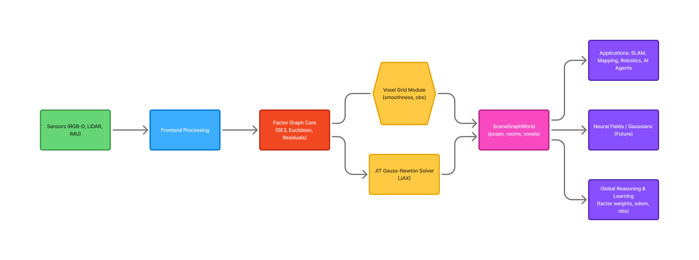

DSG-JIT Architecture
A unified, differentiable 3D Dynamic Scene Graph and SLAM engine — built on JAX, manifolds, and factor graphs.
Overview
DSG-JIT is built around one central idea:
A 3D world model should be fully differentiable, jointly optimized, and JIT-compiled for real-time performance.
To achieve this, the system is organized into five coordinated layers, each built on top of a general-purpose factor graph and SE3 manifold engine.

Each layer is optional, modular, and composable — enabling applications in classical SLAM, neural fields, robotics, and world-modeling.
1. Core Layer — Differentiable Factor Graph Engine
The core provides the primitive mathematical and structural building blocks:
Core Responsibilities
- Variable management (poses, voxels, arbitrary vectors)
- Factor definitions (priors, odometry, smoothness, observations)
- Differentiable residual functions
- JIT-compiled residual + objective builders
- Unified flat-state storage for optimization
- Jacobian computation (via JAX autodiff)
Key Modules
| Module | Purpose |
|---|---|
core.factor_graph |
Central class for building and executing factor graphs |
core.types |
Data structures (Variable, Factor, NodeId, FactorId) |
core.math3d |
Vector/rotation utilities, SE3 helpers |
This layer is geometry-agnostic — it does not know about voxels, rooms, or trajectories.
Everything above is built on these abstractions.
2. Optimization Layer — JIT Gauss–Newton on Manifolds
The optimization layer transforms the factor graph into a high-performance nonlinear solver.
Features
- Gauss–Newton with line-search
- Manifold retractors for SE3 variables
- Pure JAX implementation
- Fully JIT-compilable:
- Residuals
- Jacobians
- Solver loop
- CPU/GPU compatibility
Modules
| Module | Purpose |
|---|---|
optimization.solvers |
Gauss–Newton, manifold-aware logic |
optimization.jit_wrappers |
One-line JIT versions of solvers |
This layer is responsible for the 50–1000x performance boost seen in benchmarks.
3. SLAM Layer — Residual Functions & Manifolds
This layer plugs concrete geometry and factors into the general factor-graph engine.
Supported Manifolds
- SE3 poses
- 3D Euclidean points
- Voxel nodes (R³)
Provided Residuals
| Residual Type | Description |
|---|---|
se3_geodesic |
Pose-to-pose constraint via logmap |
odom_se3 |
Learnable odometry factor |
pose_landmark_relative |
Landmark relative measurement |
pose_voxel_point |
Transform voxel → world → camera consistency |
voxel_smoothness |
Local grid regularizer |
prior |
Generic variable prior |
Modules
| Module | Purpose |
|---|---|
slam.measurements |
All differentiable SLAM residuals |
slam.manifold |
Manifold utilities (exp/log maps, Jacobian-safe ops) |
This layer enables standard SLAM, learnable SLAM, and hybrid SLAM + voxel systems.
4. Scene Graph Layer — 3D Dynamic Scene Graph
This layer introduces the structural and semantic relationships that turn raw geometry into a world model.
Entities
- Poses
- Places
- Rooms
- Agents
- Voxels
- Attachments
- Trajectories
Relations
- Pose → Place membership
- Agent → Pose trajectory
- Room → Place grouping
- Voxel → Place attachment
Modules
| Module | Purpose |
|---|---|
scene_graph.entities |
Node classes (PoseNode, PlaceNode, RoomNode, VoxelNode, etc.) |
scene_graph.relations |
Relations & constraints that form the DSG |
Features
- Geometry + semantics in one structure
- Differentiable constraints between DSG entities
- Realtime graph growth (future)
The DSG operates as a high-level structural layer over the SLAM + voxel system.
5. World Layer — Unified World Model
The world layer combines SLAM, voxels, and the scene graph into one coherent system.
SceneGraphWorld
This is the high-level API researchers will interact with:
- Create poses, voxels, rooms, agents
- Add factors automatically
- Run optimization on the full graph
- Visualize or export world state
Training & Learning
The world layer exposes the learnable parameters used in the experiments:
- Odom SE3 measurements
- Voxel observation points
- Factor-type weights
- Joint hybrid SE3 + voxel models
Modules
| Module | Purpose |
|---|---|
world.model |
SceneGraphWorld implementation |
world.voxel_grid |
Voxel layers + smoothness |
world.training |
Trainer-style learning loop |
Information Flow Between Layers
Sensors → SLAM Residuals → Factor Graph → JIT Solver → SceneGraphWorld → Applications
- Sensors provide point clouds, images, IMU.
- SLAM residuals convert observations to geometric factors.
- Core factor graph collects variables + constraints.
- JIT solver optimizes the entire state.
- SceneGraphWorld structures it into a semantic world.
- Applications consume the optimized graph (robotics, NeRFs, planning, etc.).
Why This Design?
1. Performance
- JIT residuals + JIT Gauss–Newton
- SE3 on manifolds
- Minimal Python overhead
- 50–1000× faster than naïve Python solvers
2. Differentiability
- JAX grad through:
- Odom parameters
- Voxel obs
- Factor weights
- Entire scene graph
3. Modularity
- SLAM or NeRF-only systems
- DSG-only semantic reasoning
- Hybrid world models
- Incremental or batch optimization
4. Extensibility
This architecture supports future additions:
- Photometric residuals
- Neural field appearance models
- Real-world robotics datasets
- Differentiable planning & policies
- Joint SLAM + segmentation
Summary
DSG-JIT isn’t just “another SLAM system.”
It is a research platform for:
- Differentiable geometry
- Dynamic 3D scene graphs
- Voxel world models
- Real-time optimization
- Learnable SLAM
- Hybrid geometric + neural fields
It is designed to power the next generation of spatial intelligence systems.